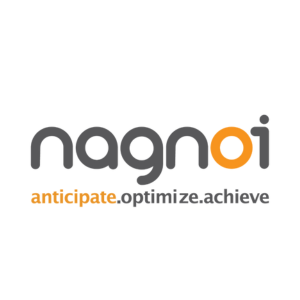

InternshipsI've had the privilege of working in various roles across different industries. I've worked roles spanning Data Science, Full Stack Development, and Business Intelligence. |
|  |
Software Engineer Summer 2023 - Worked in Front-End Development for Nagnoi's CMS for Healthcare.
|

|
Business Intelligence Engineer Summer 2022 - Used AWS-Redshift, PostgreSQL, and DataGrip to query and analyze a wide variety of large datasets. - Wrote SQL code to build, maintain, and schedule data pipelines for analytics used in Amazon’s Global Transportation Technology Services (GTTS) team. - Created a database schema and built a QuickSight dashboard to monitor transportation configuration KPI metrics and alert Product Managers across GTTS. |

|
Application Developer Summer 2021 - Optimized data-gathering code with Ruby to examine >50k server checkpoints and compliance standards. - Wrote queries using PostgreSQL to connect multiple relations and further analyze how managers are properly using their local business team application. - Developed a Power BI dashboard to demonstrate outliers and group/label data for future compliance updates in business apps. |
|
Data Scientist Spring 2021 - Worked on historical transaction data using Jupyter Notebooks for user analytics and visualization. - Performed multiple statistical tests on gathered data for algorithm improvement and outlier detection. - Coded Python scripts for data labelling, cleaning, and extraction for predictive tendency models for hundreds of users. - Used Python libraries: Pandas, Matplotlib, CSV, Numpy, Scipy.Stats, and Seaborn |